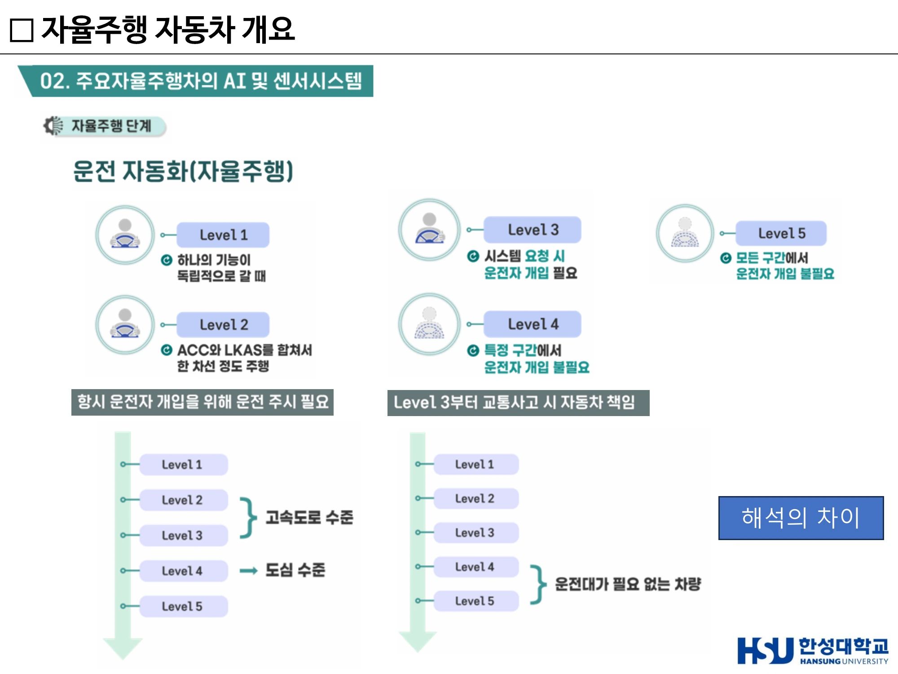
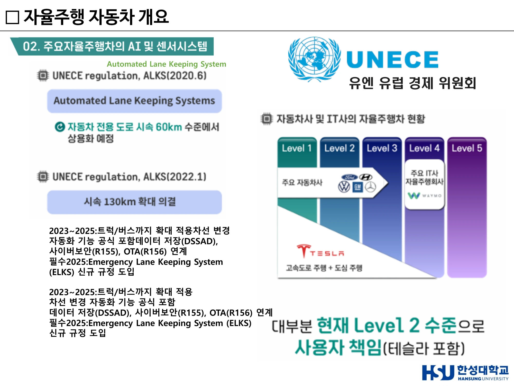
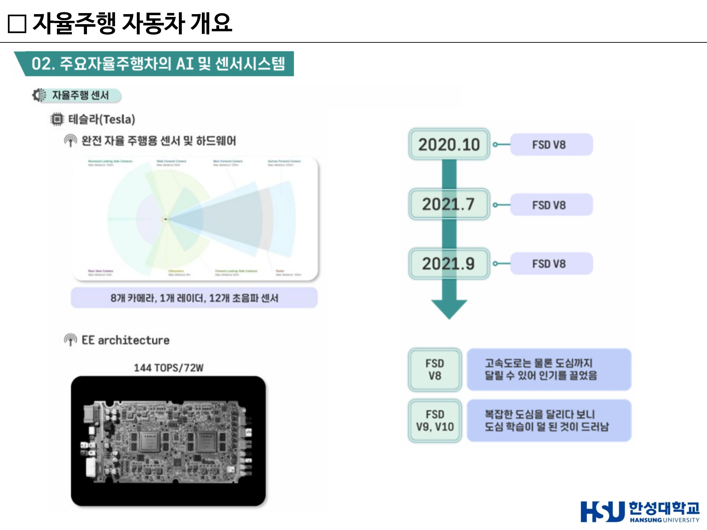
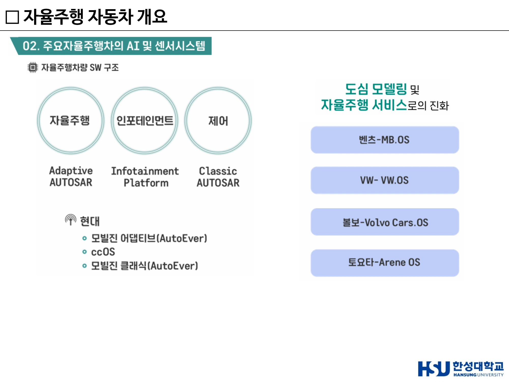
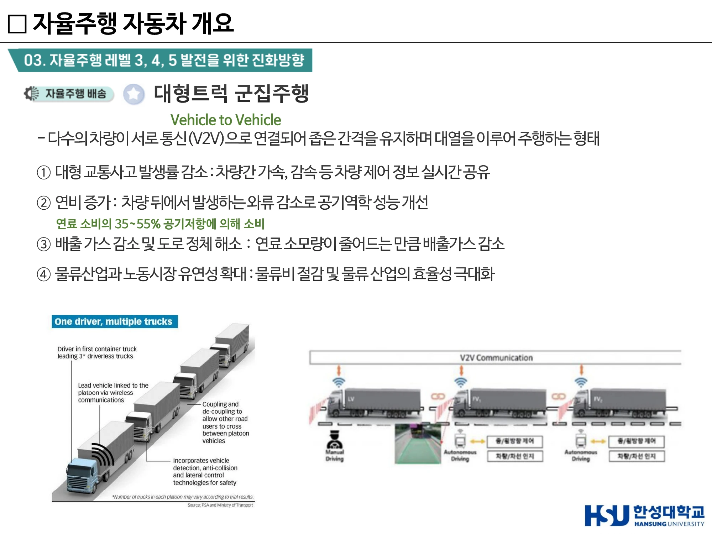

5주차 · 자율주행 단계·규제와 센서 시스템¶
🔗 강의 흐름 — 지금까지 "무엇을 하는가"를 봤다. 이번 주는 "어디까지 허용되는가"와 "누가 어떻게 만드는가"다. 레벨과 규제는 이 과목 전반의 기준이 되고, 테슬라 vs 웨이모 비교는 6주차 센서 심화의 출발점이 된다.
학습목표 — SAE 자율주행 레벨을 단계별 특징·운전자 역할 중심으로 설명하고, UNECE 규제의 변화 흐름을 서술하며, 주요 기업의 센서·AI 시스템 구성 전략을 비교할 수 있다.
💡 기초 다지기 — 레벨 3이 실질적인 경계선이다. 레벨 2까지는 "운전자가 항상 보고 있어야 하는 보조 장치", 레벨 3부터는 "차가 운전을 주도하되 요청 시 사람이 받는다". 그래서 사고 책임이 처음으로 자동차 쪽으로 넘어오는 지점이 레벨 3이다.
🗺️ 한눈에 보는 개념도¶
flowchart LR
L1["Level 1<br/>단일 기능"] --> L2["Level 2<br/>기능 결합<br/>운전자 상시 주시"]
L2 --> L3["Level 3<br/>조건부 자율<br/>요청 시 개입"]
L3 --> L4["Level 4<br/>특정 구간<br/>개입 불필요"]
L4 --> L5["Level 5<br/>완전 자율"]
L2 -.책임 경계선.-> L3
style L3 fill:#ffe0b21. SAE 자율주행 레벨 1~5¶
| 레벨 | 특징 | 운전자 역할 | 예 |
|---|---|---|---|
| 1 | 차량이 한 가지 기능만 자동 수행 | 운전자가 운전 | ACC(차간거리 유지) 또는 LKAS(차선 유지)가 각각 독립 작동 |
| 2 | 여러 기능이 결합. ACC와 LKAS가 동시 작동해 일정 구간 스스로 주행 | 항상 주시, 언제든 개입 준비 | 테슬라 오토파일럿, 대부분의 현재 양산차 |
| 3 | 조건부 자율주행(Conditional Automation). 차량이 주행을 주도하되, 시스템이 요청하면 운전자가 반드시 개입 | 요청 시 제어권 인수 | 사고 발생 시 자동차의 책임이 일부 포함 |
| 4 | 특정 구간(고속도로·제한된 도심)에서 운전자 개입 불필요. 모든 환경에서 가능한 것은 아님 | 해당 구간에서 불필요 | 웨이모 로보택시 |
| 5 | 완전 자율주행. 모든 환경에서 개입 전혀 불필요 | 없음(운전대 자체가 불필요) | — |
두 가지 해석 축
- 도로 환경 기준 — Level 1~3은 주로 고속도로 수준, Level 4부터 도심까지 확장
- 운전자 필요 여부 기준 — Level 4부터 운전자 없이 주행 가능, Level 5는 완전 무인
레벨 3을 가리키는 표현들
"주행 중에는 자동차가 책임지지만 시스템의 요청이 있을 때는 사용자가 개입해 제어권을 넘겨받아야 하는 단계", 그리고 SAE의 조건부 자율주행(Conditional Automation) — 두 표현 모두 레벨 3을 가리킨다.

▲ 운전 자동화 Level 1~5와 두 가지 해석 축(도로 환경 기준 / 운전자 필요 여부 기준) (출처: 5주차 슬라이드 p3)
2. UNECE 규제 — 기술이 아니라 법이 상용화를 정한다¶
UNECE = UN 산하 유럽경제위원회. 사이버 보안 및 SW 업데이트 관련 법규를 관장한다.
ALKS (Automated Lane Keeping System)¶
| 시기 | 규정 내용 |
|---|---|
| 2020 | 시속 60km 이하의 자동차 전용도로에서만 자율주행 기능 허용 → 초기 레벨 3은 매우 제한된 환경에서만 사용 가능 |
| 2022 | 속도 130km/h까지 확대 → 고속도로 환경에서도 실제 사용 가능 수준으로 발전 |
| 2023~2025 | 단순 기능 확장이 아니라 시스템 전체 요구사항 강화: · 트럭과 버스까지 적용 확대 · 차선 변경 자동화 기능 공식 포함 · DSSAD(Data Storage System for Automated Driving, 주행 데이터 기록 장치) · R155 — UN Regulation No.155 (Cyber Security) · R156 — UN Regulation No.156 (Software Update / OTA) 연계 필수 |
| 2025 | ELKS(Emergency Lane Keeping System, 긴급 차선 유지 시스템) 신규 규정 도입 |
핵심 메시지
자율주행은 이제 단순 기능이 아니라 하나의 완전한 안전 시스템 + 데이터 시스템 + 보안 시스템으로 발전하고 있다. 기술만으로는 상용화되지 않고 국제 규제 기준을 만족해야 한다.
현재 산업 수준의 현실¶
- 대부분의 자동차 제조사(현대차·벤츠·GM·폭스바겐)는 Level 1~2 수준에 머물러 있다.
- 테슬라 역시 실제로는 Level 2 — 많은 사람이 완전 자율주행이라 생각하지만 운전자의 책임이 여전히 존재한다.
- Level 4 영역에는 자동차 회사가 아니라 IT 기반 기업(웨이모 등)이 위치하며, 특정 지역에서 실제 서비스를 운영한다.
👉 현재 대부분의 차량은 Level 2 수준이며, 책임은 여전히 사용자에게 있다.
라이다 상용화 흐름¶
- 아우디 A8 — 라이다 센서가 최초로 적용되면서 자율주행 상용화 가능성 제시
- 2021 — 혼다, 벤츠 EQS 등에서 레벨 3 일부 상용화
- 2023 — 현대차에서도 장거리 라이다를 적용한 차량 등장
- 연구용 vs 양산 차량의 차이 — 연구용은 정확한 인식을 위해 라이다를 많이 쓰지만, 양산차는 비용 문제로 라이다 사용이 제한적
이 주차의 핵심 문장
"결국 자율주행의 핵심은 '센서 성능'이 아니라 '비용 대비 성능을 어떻게 최적화하느냐'다."

▲ UNECE ALKS 규정 변화(2020 60km/h → 2022 130km/h)와 기업별 자율주행 수준 — 대부분 현재 Level 2, 책임은 사용자 (출처: 5주차 슬라이드 p4)
3. 기업별 전략 비교 — 같은 문제, 다른 답¶

▲ 테슬라 — 카메라 8 + 레이더 1 + 초음파 12, 자체 AI 칩 144 TOPS, FSD V8→V9·V10 전개 (출처: 5주차 슬라이드 p7)
테슬라 — 카메라 중심 (Vision only)¶
- 라이다를 사용하지 않는다. 사람의 눈과 유사한 시각 기반 인지
- 구성: 카메라 8개 + 레이더 1개 + 초음파 센서 12개
- 자체 설계 AI 칩, 약 144 TOPS 연산 성능으로 실시간 판단
- EE 아키텍처 — 센서 데이터 통합 처리, 인지·판단·제어를 하나의 시스템에서 수행하는 통합형 구조
- FSD 소프트웨어 흐름 — 2020~2021 FSD V8로 고속도로뿐 아니라 도심 주행 가능 → 큰 주목. 그러나 도심은 상황이 매우 복잡해 V9, V10으로 발전하는 과정에서 도심 주행 학습이 충분치 않다는 한계도 드러남
카메라 배치와 인식 거리 — Narrow Forward 250m / Main Forward 150m / Wide Forward 60m / Forward Looking Side 80m / Rearward Looking Side 100m / Rear View 50m / Radar 150m / Ultrasonics 8m
웨이모(구글) — 고정밀 멀티 센서 융합¶
- 지붕 위 360도 라이다 + 차량 전반에 분산된 센서
- 전방 장거리 카메라 + 레이더로 먼 거리 물체 인식, 차량 주변 Perimeter 라이다 + Vision으로 360도 정밀 인식
- 핵심은 센서를 중복(redundant)으로 사용해 인지 정확도를 극대화하는 것 — 오차를 줄이고 안정성을 높인다
- 단점이 분명하다 — 고가 센서가 많아 비용이 매우 높고 양산에 불리
모빌아이 SuperVision — 11개 카메라¶
Front Main Camera / Front Long-Range Camera / Side Cameras ×4 / Rear Camera / Surround Parking Cameras ×4. 별도로 Radar(Long Range + Corner ×4), Lidar(Long-range ×3) 구성.
현대차 · 글로벌 OEM¶
- CES 2017 현대 아이오닉 자율주행차 — Aptiv 기반 시스템. 단거리·장거리 라이다, 전방·측면 레이더, 카메라, GPS·통신 결합. 컴퓨팅 시스템도 이중화 구조로 안전성·신뢰성 확보. 폭우 등 악조건에서도 안정적 자율주행을 성공시켜 주목받음
- 최근 변화 — 아이오닉5 로보택시, 폭스바겐 ID. Buzz AD 모두 차량 측면에 라이다 추가. 도심에서는 보행자·자전거·측면 차량 같은 복잡한 상황이 많아 측면 인지 성능이 중요해졌기 때문
- 👉 자율주행 센서는 "많이 쓰는 것"이 아니라 "어디에 배치하느냐"가 중요한 단계로 발전
4. 자율주행 컴퓨팅의 내재화 — SDV로 가는 길¶
과거 — 트렁크에 별도 산업용 컴퓨터를 장착. 전력 소모가 크고 공간 효율도 나쁨. 현재 — 자율주행 기능이 차량 내부로 통합되며 소형 임베디드 보드 형태로 내재화. 즉 차량 자체가 하나의 컴퓨터처럼 동작하는 SDV(Software Defined Vehicle) 구조로 발전.
생태계 구조 — 완성차 + 반도체 + 센서 기업의 협력
| 완성차 | 협력 파트너 |
|---|---|
| 볼보 · 벤츠 | 엔비디아 + 루미나 |
| 폭스바겐 | 퀄컴 + 이노비즈 |
👉 자율주행 경쟁력은 이제 센서가 아니라 "AI 반도체와 시스템 아키텍처"에서 결정된다. 2025년을 기점으로 자율주행이 본격 상용화 단계에 진입하며, 특히 모빌아이 중심의 양산형 플랫폼 확대가 예상된다.
5. 차량 소프트웨어 구조 3영역¶
| 영역 | 담당 기능 | 플랫폼 | 요구 특성 |
|---|---|---|---|
| 자율주행 | 인지·판단·경로계획 | Adaptive AUTOSAR | 고성능 컴퓨팅, AI·데이터 처리 중심 |
| 인포테인먼트 | 내비게이션·UI·콘텐츠 | Infotainment Platform | 차량 사용자 경험(UX)의 핵심 |
| 제어 | 브레이크·조향·모터 제어 | Classic AUTOSAR | 실시간성·안정성이 가장 중요(안전 직결) |
현대차 — 모빌진 어댑티브(Adaptive AUTOSAR) / ccOS / 모빌진 클래식(Classic AUTOSAR)
완성차의 자체 OS 개발
| 기업 | OS |
|---|---|
| 벤츠 | MB.OS |
| 폭스바겐 | VW.OS |
| 볼보 | Volvo Cars OS |
| 토요타 | Arene OS |
👉 자동차의 경쟁력이 하드웨어가 아니라 소프트웨어 플랫폼으로 이동하고 있다.

▲ 자율주행(Adaptive AUTOSAR) / 인포테인먼트 / 제어(Classic AUTOSAR) 3영역과 완성차 자체 OS (출처: 5주차 슬라이드 p14)
6. HD Map과 크라우드소싱 — REM¶
REM (Road Experience Management) — Crowdsourcing 기반 정밀지도 생성 기술(= 정밀 지도 구축)
- 일반 차량에 장착된 ADAS 카메라 센서를 통해 수집한 도로 주행 영상 데이터를 활용
- 도로의 차선, 표지판, 도로 구조물, 주행 경로 등의 정보를 자동으로 추출
- 수많은 차량의 데이터를 집계해 실시간 정밀지도(HD Map)를 구축하고 갱신
왜 중요한가
HD Map을 전용 측량 차량으로 만들면 비용과 갱신 주기가 문제가 된다. REM은 이미 도로를 달리고 있는 수백만 대의 일반 차량을 지도 제작 장비로 쓴다. 모빌아이가 폭스바겐 등과 함께 약 100만 대의 차량 데이터를 크라우드소싱해 고화질 지도를 구축한 것이 대표 사례다.
7. 대형트럭 군집주행 (Platooning)¶
정의 — 다수의 차량이 서로 통신(V2V)으로 연결되어 좁은 간격을 유지하며 대열을 이루어 주행하는 형태.
왜 필요한가 — 장거리 물류 운송은 고질적으로 누적된 피로로 졸음 운전 위험에 노출된다. 졸음을 쫓거나 야간 고속도로 주행 중 휴대폰으로 음악을 조작하다 사고 위험이 증가한다.
효과 4가지
| # | 효과 | 근거 |
|---|---|---|
| ① | 대형 교통사고 발생률 감소 | 차량 간 가속·감속 등 제어 정보 실시간 공유 |
| ② | 연비 증가 | 차량 뒤에서 발생하는 와류 감소로 공기역학 성능 개선. 연료 소비의 35~55%가 공기저항에 의해 소비됨 |
| ③ | 배출가스 감소 및 도로 정체 해소 | 연료 소모량 감소분만큼 배출가스 감소 |
| ④ | 물류산업과 노동시장 유연성 확대 | 물류비 절감 및 물류 산업 효율성 극대화 |
사례
- 현대자동차 (2019.11) — 국내 최초 고속도로 내 대형트럭 군집주행 시연 성공
- 소프트뱅크 (2019) — 신토메이고속도로 14km 구간. 5G NR(New Radio) 기반 V2V 통신으로 차간거리 및 자율주행 구현. 4.5GHz 5G 통신망으로 차량 간 위치·속도 정보 공유. 제어 기술은 CACC(Coordinated Adaptive Cruise Control, 협조형 차간거리 유지 제어)
군집주행 — 통신 방식과 효과를 짝지어 기억한다
군집주행의 통신 방식은 V2V이며, 대표 효과는 연료 효율 향상과 운전자 부담 완화다. V2G(전력망)·V2P(보행자)·V2I(신호등)와 혼동하지 않는다. 군집주행은 운전자의 부담을 줄이는 기술이다.

▲ V2V 기반 대형트럭 군집주행과 효과 4가지 — 연료 소비의 35~55%가 공기저항 (출처: 5주차 슬라이드(덱 8) p24)
8. 시뮬레이션 — 웨이모 Simulation City¶
실도로 주행만으로는 위험 상황을 충분히 학습할 수 없다. 웨이모는 Simulation City를 통해 가상 환경에서 대규모 주행 시나리오를 반복 검증한다. (7주차 Digital Twin과 연결된다.)
🤔 생각해 봅시다¶
- 테슬라(카메라 중심)와 웨이모(라이다 중복)의 전략 중 어느 쪽이 먼저 대중화되겠는가? 판단 근거를 비용·안전·데이터 관점에서 정리하시오.
- UNECE가 속도 상한(60→130km/h)으로 자율주행을 규제하는 방식은 타당한가? 도로 유형·날씨·ODD 등 다른 기준은 어떠한가?
- REM처럼 일반 운전자의 주행 데이터를 수집하는 것은 정당한가? 어떤 동의 절차가 필요한가?
✅ 이번 주 체크리스트¶
- 레벨 1~5를 운전자 역할 중심으로 설명할 수 있다
- 레벨 3이 책임의 경계선인 이유를 안다
- ALKS 60→130km/h, DSSAD·R155·R156·ELKS를 열거할 수 있다
- 테슬라(8+1+12, 144 TOPS)와 웨이모(멀티 라이다)의 전략 차이를 설명할 수 있다
- Classic AUTOSAR vs Adaptive AUTOSAR의 역할 차이를 안다
- 군집주행 효과 4가지와 "공기저항 35~55%"를 안다
▶️ 다음 주 예고 — 센서 하나하나를 물리 원리 수준까지 내려가 본다. 라이다 거리 공식, 1550nm이 왜 안전한가, 4D 이미징 레이더는 무엇이 4D인가, 그리고 TOPS 전쟁의 실제 숫자들. → 6주차